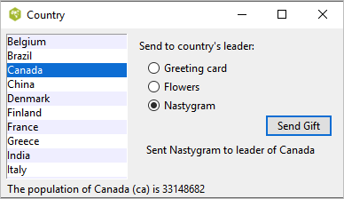
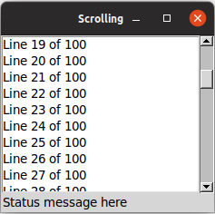

More Widgets
This chapter carries on introducing several more widgets: listbox, scrollbar, text, scale, spinbox, and progressbar. Some of these are starting to be a bit more powerful than the basic ones we looked at before. Here we'll also see a few instances of using the classic Tk widgets, in cases where there isn't (or there isn't a need for) a themed counterpart.
Listbox
A listbox widget displays a list of single-line text items, usually lengthy, and allows users to browse through the list, selecting one or more.
Listboxes are part of the classic Tk widgets; there is not presently a listbox in the themed Tk widget set.
Tk's treeview widget (which is themed) can also be used as a listbox (a one level deep tree), allowing you to use icons and styles with the list. It's also likely that a multi-column (table) list widget will make it into Tk at some point, whether based on treeview or one of the available extensions.

Listbox widgets.
Listboxes are created using the Listbox class. A height configuration option can specify the number of lines the listbox will display at a time without scrolling:
l = Listbox(parent, height=10)
Populating the Listbox Items
There's an easy way and a hard way to populate and manage all the items in the listbox.
Here's the easy way. Each listbox has a listvariable configuration option, which allows you to
link a variable (which must hold a list) to the listbox. Each element of this list
is a string representing one item in the listbox. To add, remove, or rearrange
items in the listbox, you can simply modify this variable as you would any other
list. Similarly, to find out, e.g., which item is on the third line of the listbox, just
look at the third element of the list variable.
listbox.
As we saw with widgets like entry, we need to use a StringVar as an intermediary. It provides a
mapping between Python's lists and a string representation that the underlying Tk widgets can use. It also means that anytime we change the list, we need to update the StringVar.
choices = ["apple", "orange", "banana"]
choicesvar = StringVar(value=choices)
l = Listbox(parent, listvariable=choicesvar)
...
choices.append("peach")
choicesvar.set(choices)
The older, harder way to do things is to use a set of methods that are part of the listbox widget itself. They operate on the (internal) list of items maintained by the widget:
- The
insert idx item ?item...?method is used to add one or more items to the list;idxis a 0-based index indicating the position of the item before which the item(s) should be added; specifyendto put the new items at the end of the list. - Use the
delete first ?last?method to delete one or more items from the list;firstandlastare indices as per theinsertmethod. - Use the
get first ?last?method to return the contents of a single item at the given position, or a list of the items betweenfirstandlast. - The
sizemethod returns the number of items in the list.
Selecting Items
You can choose whether users can select only a
single item at a time from the listbox, or if multiple items can simultaneously be selected. This is
controlled by the selectmode option: the default is only being able to select
a single item (browse), while a selectmode of extended allows users to select
multiple items.
The names browse and extended, again for backward compatibility reasons, are truly awful.
This is made worse by the fact that there are two other modes, single and multiple, which
you should not use (they use an old interaction style that is inconsistent with modern
user interface and platform conventions).
To find out which item or items in the listbox are currently selected, use the curselection
method. It returns a list of indices of all items currently selected; this may be an
empty list. For lists with a selectmode of browse, it will never be longer than one item. You
can also use the selection_includes index method to check if the item with the given
index is currently selected.
if lbox.selection_includes(2): ...
To programmatically change the selection, you can use the selection_clear first ?last?
method to deselect either a single item or any within the range of indices specified. To select
an item or all items in a range, use the selection_set first ?last? method. Both of
these will not touch the selection of any items outside the range specified.
If you change the selection, you should also make sure that the newly selected item is visible
(i.e., it is not scrolled out of view). To do this, use the see index method.
lbox.selection_set(idx) lbox.see(idx)
When a user changes the selection, a <<ListboxSelect>> virtual event is generated.
You can bind to this to take any action you need. Depending on your application, you may also want to bind
to a double-click <Double-1> event and use it to invoke an action with the currently selected item.
lbox.bind("<<ListboxSelect>>", lambda e: updateDetails(lbox.curselection()))
lbox.bind("<Double-1>", lambda e: invokeAction(lbox.curselection()))Stylizing the List
Like most of the "classic" Tk widgets, you have immense flexibility in modifying the appearance of a listbox.
As described in the reference manual, you can
modify the font the listbox items are displayed in, the foreground (text) and background colors for items
in their normal state, when selected, when the widget is disabled, etc. There is also an
itemconfigure method that allows you to change the foreground and background colors of
individual items.
As is often the case, restraint is useful. Generally, the default values will be entirely suitable and a good match for platform conventions. In the example we'll get to momentarily, we'll show how restrained use of these options can be put to good effect, in this case displaying alternate lines of the listbox in slightly different colors.
Keeping Extra Item Data
The listvariable (or the internal list, if you're managing things the old way) holds
the strings that will be shown in the listbox. It's often the case, though, that each string you're displaying is
associated with some other data item. This might bean internal object that is meaningful to your program, but not
meant to be displayed to users. In other words, what you're really interested in is not so much the string
displayed in the listbox, but the associated data item. For example, a listbox may display a list of names
to users, but your program is really interested in the underlying user object (or id number)
for each one, not the particular name.
How can we associate this underlying value with the name that is displayed? Unfortunately, the listbox widget itself doesn't offer any facilities, so it's something we'll have to manage separately. There are a couple of obvious approaches. First, if the displayed strings are guaranteed unique, you could use a hash table to map each name to its associated underlying object. This wouldn't work well for peoples' names, where duplicates are possible, but could work for countries, which are unique.
A second approach is to keep a second list, parallel to the list of strings displayed in the listbox. This second list will hold the underlying object associated with each item that is displayed. So the first item in the displayed strings list corresponds to the first item in the underlying objects list, the second to the second, etc. Any changes that you make in one list (insert, delete, reorder), you must make in the other. You can then easily map from the displayed list item to the underlying object, based on their position in the list.
Example
Here is a silly example showing several of these listbox techniques. We'll have a list of countries displayed. We'll be able to select only a single country at a time. As we do so, a status bar will display the population of the country. You can press a button to send one of several gifts to the selected country's head of state (well, not really, but use your imagination). Sending a gift can also be triggered by double-clicking the list or hitting the Return key.
Behind the scenes, we maintain two lists in parallel. The first is a list of two-letter country codes. The other is the corresponding name for each country that we will display in the listbox. We also have a simple hash table that contains the population of each country, indexed by the two-letter country code.

Country selector listbox example.
from tkinter import *
from tkinter import ttk
root = Tk()
# Initialize our country "databases":
# - the list of country codes (a subset anyway)
# - parallel list of country names, same order as the country codes
# - a hash table mapping country code to population
countrycodes = ('ar', 'au', 'be', 'br', 'ca', 'cn', 'dk', 'fi', 'fr', 'gr', 'in', 'it', 'jp', 'mx', 'nl', 'no', 'es', 'se', 'ch')
countrynames = ('Argentina', 'Australia', 'Belgium', 'Brazil', 'Canada', 'China', 'Denmark', \
'Finland', 'France', 'Greece', 'India', 'Italy', 'Japan', 'Mexico', 'Netherlands', 'Norway', 'Spain', \
'Sweden', 'Switzerland')
cnames = StringVar(value=countrynames)
populations = {'ar':41000000, 'au':21179211, 'be':10584534, 'br':185971537, \
'ca':33148682, 'cn':1323128240, 'dk':5457415, 'fi':5302000, 'fr':64102140, 'gr':11147000, \
'in':1131043000, 'it':59206382, 'jp':127718000, 'mx':106535000, 'nl':16402414, \
'no':4738085, 'es':45116894, 'se':9174082, 'ch':7508700}
# Names of the gifts we can send
gifts = { 'card':'Greeting card', 'flowers':'Flowers', 'nastygram':'Nastygram'}
# State variables
gift = StringVar()
sentmsg = StringVar()
statusmsg = StringVar()
# Called when the selection in the listbox changes; figure out
# which country is currently selected, and then lookup its country
# code, and from that, its population. Update the status message
# with the new population. As well, clear the message about the
# gift being sent, so it doesn't stick around after we start doing
# other things.
def showPopulation(*args):
idxs = lbox.curselection()
if len(idxs)==1:
idx = int(idxs[0])
code = countrycodes[idx]
name = countrynames[idx]
popn = populations[code]
statusmsg.set("The population of %s (%s) is %d" % (name, code, popn))
sentmsg.set('')
# Called when the user double clicks an item in the listbox, presses
# the "Send Gift" button, or presses the Return key. In case the selected
# item is scrolled out of view, make sure it is visible.
#
# Figure out which country is selected, which gift is selected with the
# radiobuttons, "send the gift", and provide feedback that it was sent.
def sendGift(*args):
idxs = lbox.curselection()
if len(idxs)==1:
idx = int(idxs[0])
lbox.see(idx)
name = countrynames[idx]
# Gift sending left as an exercise to the reader
sentmsg.set("Sent %s to leader of %s" % (gifts[gift.get()], name))
# Create and grid the outer content frame
c = ttk.Frame(root, padding=(5, 5, 12, 0))
c.grid(column=0, row=0, sticky=(N,W,E,S))
root.grid_columnconfigure(0, weight=1)
root.grid_rowconfigure(0,weight=1)
# Create the different widgets; note the variables that many
# of them are bound to, as well as the button callback.
# We're using the StringVar() 'cnames', constructed from 'countrynames'
lbox = Listbox(c, listvariable=cnames, height=5)
lbl = ttk.Label(c, text="Send to country's leader:")
g1 = ttk.Radiobutton(c, text=gifts['card'], variable=gift, value='card')
g2 = ttk.Radiobutton(c, text=gifts['flowers'], variable=gift, value='flowers')
g3 = ttk.Radiobutton(c, text=gifts['nastygram'], variable=gift, value='nastygram')
send = ttk.Button(c, text='Send Gift', command=sendGift, default='active')
sentlbl = ttk.Label(c, textvariable=sentmsg, anchor='center')
status = ttk.Label(c, textvariable=statusmsg, anchor=W)
# Grid all the widgets
lbox.grid(column=0, row=0, rowspan=6, sticky=(N,S,E,W))
lbl.grid(column=1, row=0, padx=10, pady=5)
g1.grid(column=1, row=1, sticky=W, padx=20)
g2.grid(column=1, row=2, sticky=W, padx=20)
g3.grid(column=1, row=3, sticky=W, padx=20)
send.grid(column=2, row=4, sticky=E)
sentlbl.grid(column=1, row=5, columnspan=2, sticky=N, pady=5, padx=5)
status.grid(column=0, row=6, columnspan=2, sticky=(W,E))
c.grid_columnconfigure(0, weight=1)
c.grid_rowconfigure(5, weight=1)
# Set event bindings for when the selection in the listbox changes,
# when the user double clicks the list, and when they hit the Return key
lbox.bind('<<ListboxSelect>>', showPopulation)
lbox.bind('<Double-1>', sendGift)
root.bind('<Return>', sendGift)
# Colorize alternating lines of the listbox
for i in range(0,len(countrynames),2):
lbox.itemconfigure(i, background='#f0f0ff')
# Set the starting state of the interface, including selecting the
# default gift to send, and clearing the messages. Select the first
# country in the list; because the <<ListboxSelect>> event is only
# fired when users makes a change, we explicitly call showPopulation.
gift.set('card')
sentmsg.set('')
statusmsg.set('')
lbox.selection_set(0)
showPopulation()
root.mainloop()
One obvious thing missing from this example was that while the list of countries could be quite long, only part of it fits on the screen at once. To show countries further down in the list, you had to either drag with your mouse or use the down arrow key. A scrollbar would have been nice. Let's fix that.
Scrollbar
A scrollbar widget helps users see all parts of another widget, whose content is typically much larger than what can be shown in the available screen space.

Scrollbar widgets.
Scrollbars are created using the ttk.Scrollbar class:
s = ttk.Scrollbar( parent, orient=VERTICAL, command=listbox.yview) listbox.configure(yscrollcommand=s.set)
Unlike in some user interface toolkits, Tk scrollbars are not a part of another widget (e.g., a listbox), but are a separate widget altogether. Instead, scrollbars communicate with the scrolled widget by calling methods on the scrolled widget; as it turns out, the scrolled widget also needs to call methods on the scrollbar.
The orient configuration option determines whether the scrollbar will
scroll the scrolled widget in the horizontal or vertical dimension. You then need to use the
command configuration option to specify how to communicate with the scrolled widget. This is the
method to call on the scrolled widget when the scrollbar moves.
Every widget that can be scrolled vertically includes a method named yview, while those that
can be scrolled horizontally have a method named xview). As long as this method is
present, the scrollbar doesn't need to know anything else about the scrolled widget. When the
scrollbar is manipulated, it appends several parameters to the method call, indicating
how it was scrolled, to what position, etc.
The scrolled widget also needs to communicate back to the scrollbar, telling it what percentage
of the entire content area is now visible. Besides the yview and/or xview methods,
every scrollable widget also has a yscrollcommand and/or xscrollcommand
configuration option. This is used to specify a method call, which must be the scrollbar's
set method. Again, additional parameters will be automatically tacked onto the method
call.
Example
Listboxes are one of several types of widgets that are scrollable. Here, we'll build a very simple user interface, consisting of a vertically scrollable listbox that takes up the entire window, with just a status line at the bottom.

Scrolling a listbox.
from tkinter import *
from tkinter import ttk
root = Tk()
l = Listbox(root, height=5)
l.grid(column=0, row=0, sticky=(N,W,E,S))
s = ttk.Scrollbar(root, orient=VERTICAL, command=l.yview)
s.grid(column=1, row=0, sticky=(N,S))
l['yscrollcommand'] = s.set
ttk.Label(root, text="Status message here", anchor=(W)).grid(column=0, columnspan=2, row=1, sticky=(W,E))
root.grid_columnconfigure(0, weight=1)
root.grid_rowconfigure(0, weight=1)
for i in range(1,101):
l.insert('end', 'Line %d of 100' % i)
root.mainloop()Text
A text widget provides users with an area so that they can enter multiple lines of text.
Text widgets are part of the classic Tk widgets, not the themed Tk widgets.

Text widgets.
Text widgets are created using the Text class:
t = Text(parent, width=40, height=10)
The width and height options specify the requested screen size of the text
widget, in characters and rows, respectively. The contents of the text can be arbitrarily large.
You can use the wrap configuration option to control how line wrapping is handled:
values are none (no wrapping, text may horizontally scroll), char (wrap at any
character), and word (wrapping will only occur at word boundaries).
A text widget can be disabled so that no editing can occur. Because text is not a themed widget,
the usual state and instate methods are not available. Instead, use the
configuration option state, setting it to either disabled or normal.
txt['state'] = 'disabled'
Scrolling works the same way as in listboxes. The xscrollcommand and yscrollcommand
configuration options attach the text widget to horizontal and/or vertical scrollbars,
and the xview and yview methods are called from scrollbars.
To ensure that a given line is visible (i.e., not scrolled out of view), you can use the see index
method, where index is in the form linenum.charnum, e.g.,
5.0 for the first (0-based) character of line 5 (1-based).
Contents
Text widgets do not have a linked variable associated with them like, for example, entry widgets do.
To retrieve the contents of the entire text widget, call the method get 1.0 end; the 1.0
is an index into the text, and means the first character of the first line, and end is a shortcut
for the index of the last character in the last line. Other indices could be provided to retrieve smaller ranges of
text if needed.
Text can be added to the widget using the insert index string method; again index
is in the form line.char and marks the character before which text is inserted; use end
to add text to the end of the widget. You can delete a range of text using the delete start end
method, where both start and end are text indices as already described.
We'll get into the text widget's many additional advanced features in a later chapter.
Scale
A scale widget allows users to choose a numeric value through direct manipulation.

Scale widgets.
Scale widgets are created using the ttk.Scale class:
s = ttk.Scale(parent, orient=HORIZONTAL, length=200, from_=1.0, to=100.0)
Because 'from' is a reserved keyword in Python, we need to add a trailing underscore when using it as a configuration option.
The orient option may be either horizontal or vertical. The length
option, which represents the longer axis of either horizontal or vertical scales, is specified in screen
units (e.g., pixels). You should also define the range of the number that
the scale allows users to choose; to do this, set a floating-point number for each of the
from and to configuration options.
There are several different ways you can set the current value of the scale (which must be a floating-point
value between the from and to values).
You can set (or read, to get the current value)
the scale's value configuration option. You can link the scale to a variable using the variable
option. Or, you can call the scale's set value method to change the value, or the get
method to read the current value.
A command configuration option lets you specify a script to call whenever the
scale is changed. Tk will append the current value of the scale as a parameter each time it
calls this script (we saw a similar thing with extra parameters being added to scrollbar callbacks).
# label tied to the same variable as the scale, so auto-updates num = StringVar() ttk.Label(root, textvariable=num).grid(column=0, row=0, sticky='we') # label that we'll manually update via the scale's command callback manual = ttk.Label(root) manual.grid(column=0, row=1, sticky='we') def update_lbl(val): manual['text'] = "Scale at " + val scale = ttk.Scale(root, orient='horizontal', length=200, from_=1.0, to=100.0, variable=num, command=update_lbl) scale.grid(column=0, row=2, sticky='we') scale.set(20)
As with other themed widgets, you can use the state disabled, state !disabled, and
instate disabled methods to prevent users from modifying the scale.
As the scale widget does not display the actual values, you may want to add those separately, e.g., using label widgets.
Spinbox
A spinbox widget allows users to choose numbers (or, in fact, items from an arbitrary list). It does this by combining an entry-like widget showing the current value with a pair of small up/down arrows, which can be used to step through the range of possible choices.

Spinbox widgets.
Spinbox widgets are created using the ttk.Spinbox class:
spinval = StringVar()
s = ttk.Spinbox(parent, from_=1.0, to=100.0, textvariable=spinval)
Like scale widgets, spinboxes let user choose a number between a certain range
(specified using the from and to configuration options),
though through a very different user interface. You can also specify an increment, which controls how much the value changes every time you click
the up or down button.
Like a listbox or combobox, spinboxes can also be used to let users choose an item from an arbitrary list of strings;
these can be specified using the values configuration option. This works in the same way it does for comboboxes;
specifying a list of values will override to from and to settings.
In their default state, spinboxes allow users to select values either via the up and down buttons, or by typing them directly into the
entry area that displays the current value. If you'd like to disable the latter feature, so that only the up and down buttons are available,
you can set the readonly state flag.
s.state(['readonly'])
Like other themed widgets, you can also disable spinboxes, via the disabled state flag, or check the state via the instate method.
Spinboxes also support validation in the same manner as entry widgets, using the validate and validatecommand
configuration options.
You might be puzzled about when to choose a scale, listbox, combobox, entry, or a spinbox. Often, several of these can be used for the same types of data. The answer really depends on what you want users to select, platform user interface conventions, and the role the value plays in your user interface.
For example, both a combobox and a spinbox take up fairly small amounts of space compared with a listbox. They might make sense for a more peripheral setting. A more primary and prominent choice in a user interface may warrant the extra space a listbox occupies. Spinboxes don't make much sense when items don't have a natural and obvious ordering to them. Be careful about putting too many items in both comboboxes and spinboxes. This can make it more time consuming to select an item.
There is a boolean wrap option that determines whether
the value should wrap around when it goes beyond the starting or ending values. You can also specify a width
for the entry holding the current value of the spinbox.
Again there are choices as to how to set or get the current value in the spinbox. Normally, you would specify a linked
variable with the textvariable configuration option. As usual, any changes to the variable are reflected in the spinbox,
while any changes in the spinbox are reflected in the linked variable. As well, the set value and get
methods allow you to set or get the value directly.
Spinboxes generate virtual events when users press up (<<Increment>>) or down (<<Decrement>>).
A command configuration option allows you to provide a callback that is invoked on any changes.